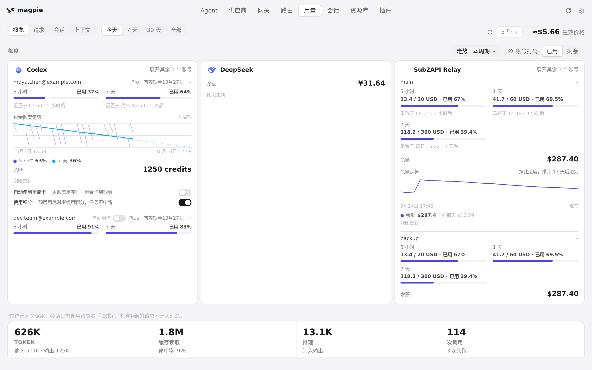

#1245 界面预览
commit 0cf23b3 · 回到 PR · 「用量」页额度卡片在遇到“ZCode 账号已无 GLM Coding Plan、免费体验套餐也已结束”这一读取结果时，不再显示「暂时无法获取额度」，而是显示一句说明没有可用额度、需订阅 GLM Coding Plan 的新文案（中文、繁体、日文、德文均已翻译）；真正的“读取失败”仍保持原文案。
红线是鼠标走过的轨迹，红色圆环是一次点击；底部文字是这一步在做什么。空格暂停，← → 逐段查看。

额度卡片区：提示文字所在的位置 · 额度卡片区：每个账号一张卡片，卡片上的文字就是额度状态